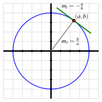

In all of our studies with derivatives so far, we have worked with functions whose formula is given explicitly in terms of \(x\text{.}\) But there are many interesting curves whose equations involving \(x\) and \(y\) are impossible to solve for \(y\) in terms of \(x\text{.}\)
Figure2.7.1.At left, the circle given by \(x^2 + y^2 = 16\text{.}\) In the middle, the portion of the circle \(x^2 + y^2 = 16\) that has been highlighted in the box at left. And at right, the curve given by \(x^3 - y^3 = 6xy\text{.}\)
Perhaps the simplest and most natural of all such curves are circles. Because of the circle’s symmetry, for each \(x\) value strictly between the endpoints of the horizontal diameter, there are two corresponding \(y\)-values. For instance, in Figure 2.7.1, we have labeled \(A = (-3,\sqrt{7})\) and \(B = (-3,-\sqrt{7})\text{,}\) and these points demonstrate that the circle fails the vertical line test. Hence, it is impossible to represent the circle through a single function of the form \(y = f(x)\text{.}\) But portions of the circle can be represented explicitly as a function of \(x\text{,}\) such as the highlighted arc that is magnified in the center of Figure 2.7.1. Moreover, it is evident that the circle is locally linear, so we ought to be able to find a tangent line to the curve at every point. Thus, it makes sense to wonder if we can compute \(\frac{dy}{dx}\) at any point on the circle, even though we cannot write \(y\) explicitly as a function of \(x\text{.}\)
We say that the equation \(x^2 + y^2 = 16\) defines \(y\)implicitly as a function of \(x\text{.}\) The graph of the equation can be broken into pieces where each piece can be defined by an explicit function of \(x\text{.}\) For the circle, we could choose to take the top half as one explicit function of \(x\text{,}\) namely \(y = \sqrt{16 - x^2}\) and the bottom half as the explicit function \(y = -\sqrt{16 - x^2}\text{.}\) The equation for the circle defines an implicit function of \(x\text{.}\)
How can we find an equation for \(\frac{dy}{dx}\) without an explicit formula for \(y\) in terms of \(x\text{?}\) The following preview activity reminds us of some ways we can compute derivatives of functions in settings where the function’s formula is not known.
Let \(f\) be a differentiable function of \(x\) (whose formula is not known) and recall that \(\frac{d}{dx}[f(x)]\) and \(f'(x)\) are interchangeable notations. Determine each of the following derivatives of combinations of explicit functions of \(x\text{,}\) the unknown function \(f\text{,}\) and an arbitrary constant \(c\text{.}\)
We begin our exploration of implicit differentiation with the example of the circle given by \(x^2 + y^2 = 16\text{.}\) How can we find a formula for \(\frac{dy}{dx}\text{?}\)
By viewing \(y\) as an implicit function of \(x\text{,}\) we think of \(y\) as some function whose formula \(f(x)\) is unknown, but which we can differentiate. Just as \(y\) represents an unknown formula, so too its derivative with respect to \(x\text{,}\)\(\frac{dy}{dx}\text{,}\) will be (at least temporarily) unknown.
Note carefully the different roles being played by \(x\) and \(y\text{.}\) Because \(x\) is the independent variable, \(\frac{d}{dx} \left[x^2\right] = 2x\text{.}\) But \(y\) is the dependent variable and \(y\) is an implicit function of \(x\text{.}\) Recall Preview Activity 2.7.1, where we computed \(\frac{d}{dx}[f(x)^2]\text{.}\) Computing \(\frac{d}{dx}[y^2]\) is the same, and requires the chain rule, by which we find that \(\frac{d}{dx}[y^2] = 2y^1 \frac{dy}{dx}\text{.}\) We now have that
There are several important things to observe about the result that \(\frac{dy}{dx} = -\frac{x}{y}\text{.}\) First, this expression for the derivative involves both \(x\) and \(y\text{.}\) This makes sense because there are two corresponding points on the circle for each value of \(x\) between \(-4\) and \(4\text{,}\) and the slope of the tangent line is different at each of these points.
Second, this formula is entirely consistent with our understanding of circles. The slope of the radius from the origin to the point \((a,b)\) is \(m_r = \frac{b}{a}\text{.}\) The tangent line to the circle at \((a,b)\) is perpendicular to the radius, and thus has slope \(m_t = -\frac{a}{b}\text{,}\) as shown in Figure 2.7.2. In particular, the slope of the tangent line is zero at \((0,4)\) and \((0,-4)\text{,}\) and is undefined at \((-4,0)\) and \((4,0)\text{.}\) All of these values are consistent with the formula \(\frac{dy}{dx} = -\frac{x}{y}\text{.}\)
Figure2.7.2.The circle given by \(x^2 + y^2 = 16\) with point \((a,b)\) on the circle and the tangent line at that point, with labeled slopes of the radial line, \(m_r\text{,}\) and tangent line, \(m_t\text{.}\)
For the three derivatives we now must execute, the first uses the simple power rule, the second requires the chain rule (since \(y\) is an implicit function of \(x\)), and the third necessitates the product rule (again since \(y\) is a function of \(x\)). Applying these rules, we now find that
We want to solve this equation for \(\frac{dy}{dx}\text{.}\) To do so, we first collect all of the terms involving \(\frac{dy}{dx}\) on one side of the equation.
Note that the expression for \(\frac{dy}{dx}\) depends on both \(x\) and \(y\text{.}\) To find the slope of the tangent line at \((-1,1)\text{,}\) we substitute the coordinates into the formula for \(\frac{dy}{dx}\text{,}\) using the notation
Example 2.7.3 shows that it is possible when differentiating implicitly to have multiple terms involving \(\frac{dy}{dx}\text{.}\) We use addition and subtraction to collect all terms involving \(\frac{dy}{dx}\) on one side of the equation, then factor to get a single term of \(\frac{dy}{dx}\text{.}\) Finally, we divide to solve for \(\frac{dy}{dx}\text{.}\)
to denote the evaluation of \(\frac{dy}{dx}\) at the point \((a,b)\text{.}\) This is analogous to writing \(f'(a)\) when \(f'\) depends on a single variable.
gives an instruction to take the derivative with respect to \(x\) of the quantity \(x^2 + y^2\text{,}\) presumably where \(y\) is a function of \(x\text{.}\) On the other hand,
means the product of the derivative of \(y\) with respect to \(x\) with the quantity \(x^2 + y^2\text{.}\) Understanding this notational subtlety is essential.
It is natural to ask where the tangent line to a curve is vertical or horizontal. The slope of a horizontal tangent line must be zero, while the slope of a vertical tangent line is undefined. Often the formula for \(\frac{dy}{dx}\) is expressed as a quotient of functions of \(x\) and \(y\text{,}\) say
The tangent line is horizontal precisely when the numerator is zero and the denominator is nonzero, making the slope of the tangent line zero. If we can solve the equation \(p(x,y) = 0\) for either \(x\) and \(y\) in terms of the other, we can substitute that expression into the original equation for the curve. This gives an equation in a single variable, and if we can solve that equation we can find the point(s) on the curve where \(p(x,y) = 0\text{.}\) At those points, the tangent line is horizontal.
Consider the curve defined by the equation \(y(y^2-1)(y-2) = x(x-1)(x-2)\text{,}\) whose graph is pictured in Figure 2.7.6. Through implicit differentiation, it can be shown that
Determine all points \((x,y)\) at which the tangent line to the curve is horizontal. (Use technology appropriately to find the needed zeros of the relevant polynomial function.)
Determine all points \((x,y)\) at which the tangent line is vertical. (Use technology appropriately to find the needed zeros of the relevant polynomial function.)
In an equation involving \(x\) and \(y\) where portions of the graph can be defined by explicit functions of \(x\text{,}\) we say that \(y\) is an implicit function of \(x\text{.}\) A good example of such a curve is the unit circle.
We use implicit differentiation to differentiate an implicitly defined function. We differentiate both sides of the equation with respect to \(x\text{,}\) treating \(y\) as a function of \(x\) by applying the chain rule. If possible, we subsequently solve for \(\frac{dy}{dx}\) using algebra.
While \(\frac{dy}{dx}\) may now involve both the variables \(x\) and \(y\text{,}\)\(\frac{dy}{dx}\) still gives the slope of the tangent line to the curve. It may be used to decide where the tangent line is horizontal (\(\frac{dy}{dx} = 0\)) or vertical (\(\frac{dy}{dx}\) is undefined), or to find the equation of the tangent line at a particular point on the curve.
PTX:ERROR: WeBWorK problem Library/UCSB/Stewart5_3_6/Stewart5_3_6_15.pg with seed 123 does not return valid XML It may not be PTX compatible Use -a to halt with returned content
Are there any points where the slope is not defined? (Enter them as comma-separated ordered-pairs, e.g., (1,3), (-2,5). Enter none if there are no such points.)
Use implicit differentiation to find an equation of the tangent line to curve called the devil’s curve,defined by \(y^{2}\mathopen{}\left(y^{2}-25\right) = x^{2}\mathopen{}\left(x^{2}-3\right)\text{,}\) at the point \(\left(0,-5\right)\text{.}\)
Consider the curve given by the equation \(2y^3+y^2-y^5 = x^4 - 2x^3 + x^2\text{.}\) Find all points at which the tangent line to the curve is horizontal or vertical. Be sure to use a graphing utility to plot this implicit curve and to visually check the results of algebraic reasoning that you use to determine where the tangent lines are horizontal and vertical.
For the curve given by the equation \(\sin(x+y) + \cos(x-y) = 1\text{,}\) find the equation of the tangent line to the curve at the point \((\frac{\pi}{2}, \frac{\pi}{2})\text{.}\)
Implicit differentiation enables us a different perspective from which to see why the rule \(\frac{d}{dx} [a^x] = a^x \ln(a)\) holds, if we assume that \(\frac{d}{dx}[\ln(x)] = \frac{1}{x}\text{.}\) This exercise leads you through the key steps to do so.
Let \(y = a^x\text{.}\) Rewrite this equation using the natural logarithm function to write \(x\) in terms of \(y\) (and the constant \(a\)).
Differentiate both sides of the equation you found in (a) with respect to \(x\text{,}\) keeping in mind that \(y\) is implicitly a function of \(x\text{.}\)
Solve the equation you found in (b) for \(\frac{dy}{dx}\text{,}\) and then use the definition of \(y\) to write \(\frac{dy}{dx}\) solely in terms of \(x\text{.}\) What have you found?